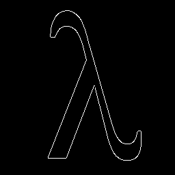

| Safe Haskell | None |
|---|---|
| Language | Haskell2010 |
OpenCV.ImgProc.FeatureDetection
- canny :: Double -> Double -> Maybe Int32 -> CannyNorm -> Mat (S '[h, w]) channels (S Word8) -> CvExcept (Mat (S '[h, w]) (S 1) (S Word8))
- goodFeaturesToTrack :: depth `In` '[S Word8, S Float, D] => Mat (S '[h, w]) (S 1) depth -> Int32 -> Double -> Double -> Maybe (Mat (S '[h, w]) (S 1) (S Word8)) -> Maybe Int32 -> GoodFeaturesToTrackDetectionMethod -> Vector (V2 Float)
- houghCircles :: Double -> Double -> Maybe Double -> Maybe Double -> Maybe Int32 -> Maybe Int32 -> Mat (S '[h, w]) (S 1) (S Word8) -> Vector Circle
- houghLinesP :: PrimMonad m => Double -> Double -> Int32 -> Maybe Double -> Maybe Double -> Mut (Mat (S '[h, w]) (S 1) (S Word8)) (PrimState m) -> m (Vector (LineSegment Int32))
- data GoodFeaturesToTrackDetectionMethod
- data CannyNorm
- data Circle = Circle {
- circleCenter :: V2 Float
- circleRadius :: Float
- data LineSegment depth = LineSegment {
- lineSegmentStart :: !(V2 depth)
- lineSegmentStop :: !(V2 depth)
Documentation
Arguments
| :: Double | First threshold for the hysteresis procedure. |
| -> Double | Second threshold for the hysteresis procedure. |
| -> Maybe Int32 | Aperture size for the |
| -> CannyNorm | A flag, indicating whether to use the more accurate L2 norm or the default L1 norm. |
| -> Mat (S '[h, w]) channels (S Word8) | 8-bit input image. |
| -> CvExcept (Mat (S '[h, w]) (S 1) (S Word8)) |
Finds edges in an image using the Canny86 algorithm.
Example:
cannyImg
:: forall shape channels depth
. (Mat shape channels depth ~ Lambda)
=> Mat shape ('S 1) depth
cannyImg = exceptError $
canny 30 200 Nothing CannyNormL1 lambda

Arguments
| :: depth `In` '[S Word8, S Float, D] | |
| => Mat (S '[h, w]) (S 1) depth | Input 8-bit or floating-point 32-bit, single-channel image. |
| -> Int32 | Maximum number of corners to return. If there are more corners than are found, the strongest of them is returned. |
| -> Double | Parameter characterizing the minimal accepted quality of image corners. The parameter value is multiplied by the best corner quality measure, which is the minimal eigenvalue (see cornerMinEigenVal ) or the Harris function response (see cornerHarris ). The corners with the quality measure less than the product are rejected. For example, if the best corner has the quality measure = 1500, and the qualityLevel=0.01 , then all the corners with the quality measure less than 15 are rejected. |
| -> Double | Minimum possible Euclidean distance between the returned corners. |
| -> Maybe (Mat (S '[h, w]) (S 1) (S Word8)) | Optional region of interest. If the image is not empty (it needs to have the type CV_8UC1 and the same size as image ), it specifies the region in which the corners are detected. |
| -> Maybe Int32 | Size of an average block for computing a derivative covariation matrix over each pixel neighborhood. See cornerEigenValsAndVecs. |
| -> GoodFeaturesToTrackDetectionMethod | Parameter indicating whether to use a Harris detector (see cornerHarris) or cornerMinEigenVal. |
| -> Vector (V2 Float) |
Determines strong corners on an image.
The function finds the most prominent corners in the image or in the specified image region.
- Function calculates the corner quality measure at every source image pixel using the cornerMinEigenVal or cornerHarris.
- Function performs a non-maximum suppression (the local maximums in 3 x 3 neighborhood are retained).
- The corners with the minimal eigenvalue less than
𝚚𝚞𝚊𝚕𝚒𝚝𝚢𝙻𝚎𝚟𝚎𝚕 * max(x,y) qualityMeasureMap(x,y)are rejected. - The remaining corners are sorted by the quality measure in the descending order.
- Function throws away each corner for which there is a stronger corner at a distance less than maxDistance.
Example:
goodFeaturesToTrackTraces
:: forall (width :: Nat)
(height :: Nat)
(channels :: Nat)
(depth :: *)
. (Mat (ShapeT [height, width]) ('S channels) ('S depth) ~ Frog)
=> Mat (ShapeT [height, width]) ('S channels) ('S depth)
goodFeaturesToTrackTraces = exceptError $ do
imgG <- cvtColor bgr gray frog
let features = goodFeaturesToTrack imgG 20 0.01 0.5 Nothing Nothing CornerMinEigenVal
withMatM (Proxy :: Proxy [height, width])
(Proxy :: Proxy channels)
(Proxy :: Proxy depth)
white $ imgM -> do
void $ matCopyToM imgM (V2 0 0) frog Nothing
forM_ features $ f -> do
circle imgM (round <$> f :: V2 Int32) 2 blue 5 LineType_AA 0

Arguments
| :: Double | Inverse ratio of the accumulator resolution to the image resolution.
For example, if |
| -> Double | Minimum distance between the centers of the detected circles. If the parameter is too small, multiple neighbor circles may be falsely detected in addition to a true one. If it is too large, some circles may be missed. |
| -> Maybe Double | The higher threshold of the two passed to the |
| -> Maybe Double | The accumulator threshold for the circle centers at the detection stage. The smaller it is, the more false circles may be detected. Circles, corresponding to the larger accumulator values, will be returned first. Default is 100. |
| -> Maybe Int32 | Minimum circle radius. |
| -> Maybe Int32 | Maximum circle radius. |
| -> Mat (S '[h, w]) (S 1) (S Word8) | |
| -> Vector Circle |
Finds circles in a grayscale image using a modification of the Hough transformation.
Example:
houghCircleTraces
:: forall (width :: Nat)
(height :: Nat)
(channels :: Nat)
(depth :: *)
. (Mat (ShapeT [height, width]) ('S channels) ('S depth) ~ Circles_1000x625)
=> Mat (ShapeT [height, width]) ('S channels) ('S depth)
houghCircleTraces = exceptError $ do
imgG <- cvtColor bgr gray circles_1000x625
let circles = houghCircles 1 10 Nothing Nothing Nothing Nothing imgG
withMatM (Proxy :: Proxy [height, width])
(Proxy :: Proxy channels)
(Proxy :: Proxy depth)
white $ imgM -> do
void $ matCopyToM imgM (V2 0 0) circles_1000x625 Nothing
forM_ circles $ c -> do
circle imgM (round <$> circleCenter c :: V2 Int32) (round (circleRadius c)) blue 1 LineType_AA 0
Arguments
| :: PrimMonad m | |
| => Double | Distance resolution of the accumulator in pixels. |
| -> Double | Angle resolution of the accumulator in radians. |
| -> Int32 | Accumulator threshold parameter. Only those lines are returned that get enough votes (> threshold). |
| -> Maybe Double | Minimum line length. Line segments shorter than that are rejected. |
| -> Maybe Double | Maximum allowed gap between points on the same line to link them. |
| -> Mut (Mat (S '[h, w]) (S 1) (S Word8)) (PrimState m) | Source image. May be modified by the function. |
| -> m (Vector (LineSegment Int32)) |
Example:
houghLinesPTraces
:: forall (width :: Nat)
(height :: Nat)
(channels :: Nat)
(depth :: * )
. (Mat (ShapeT [height, width]) ('S channels) ('S depth) ~ Building_868x600)
=> Mat (ShapeT [height, width]) ('S channels) ('S depth)
houghLinesPTraces = exceptError $ do
edgeImg <- canny 50 200 Nothing CannyNormL1 building_868x600
edgeImgBgr <- cvtColor gray bgr edgeImg
withMatM (Proxy :: Proxy [height, width])
(Proxy :: Proxy channels)
(Proxy :: Proxy depth)
white $ imgM -> do
edgeImgM <- thaw edgeImg
lineSegments <- houghLinesP 1 (pi / 180) 80 (Just 30) (Just 10) edgeImgM
void $ matCopyToM imgM (V2 0 0) edgeImgBgr Nothing
forM_ lineSegments $ lineSegment -> do
line imgM
(lineSegmentStart lineSegment)
(lineSegmentStop lineSegment)
red 2 LineType_8 0

data GoodFeaturesToTrackDetectionMethod Source #
Constructors
| HarrisDetector Double | Harris detector and it free k parameter |
| CornerMinEigenVal |
A flag, indicating whether to use the more accurate L2 norm or the default L1 norm.
Constructors
| CannyNormL1 | |
| CannyNormL2 |
Constructors
| Circle | |
Fields
| |
data LineSegment depth Source #
Constructors
| LineSegment | |
Fields
| |
Instances
| Functor LineSegment Source # | |
| Foldable LineSegment Source # | |
| Traversable LineSegment Source # | |
| IsVec V4 depth => IsVec LineSegment depth Source # | |
| Show depth => Show (LineSegment depth) Source # | |
| type VecDim LineSegment Source # | |